The fourth generation of wireless technology transformed mobile communication by delivering high-speed internet access, lower latency, and an all-IP network architecture that enabled seamless streaming, online gaming, and advanced smartphone applications.
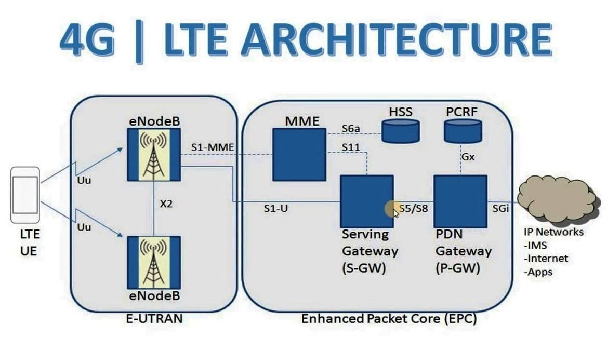
֎ In 3G, base station was termed "nodeB"
֎ In 4G, base station was termed "eNodeB"
֎ In 5G, base station is termed "gNodeB"
֎ The RAN of 4G EPS is called E-UTRAN (Evolved Universal Terrestrial Radio Access Network).
֎ LTE separates Control and User data flows.
֎ Control messages are called signalling messages; User data is called Traffic.
֎ MME controls mobility and anchors user to core network.
֎ HSS authenticates user for services.
֎ S-GW and P-GW route data traffic to the operator services network.
֎ E-UTRAN provides user with radio (wireless) services.
֎ OFDMA
֎ UWB (Ultra Wide Band)
֎ Smart Antenna
֎ Long term power prediction
֎ Scheduling among users
֎ Adaptive modulation and power control
The LTE air interface is the wireless communication link between the UE and the eNodeB. It delivers high data rates, low latency, and efficient spectrum utilization using OFDMA (downlink), SC-FDMA (uplink), and flexible bandwidths from 1.4 MHz to 20 MHz.
Features — ֎ Duplexing option (FDD, TDD) ֎ Scalable Bandwidth ֎ OFDMA access technique ֎ Modulation ֎ Shared channel ֎ MIMO & Mobility
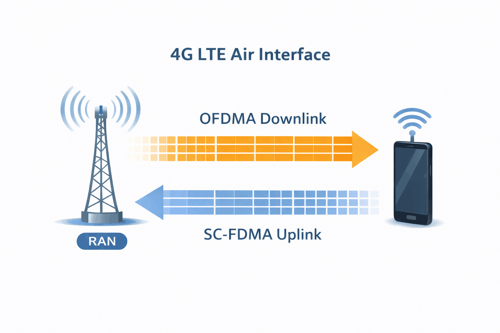
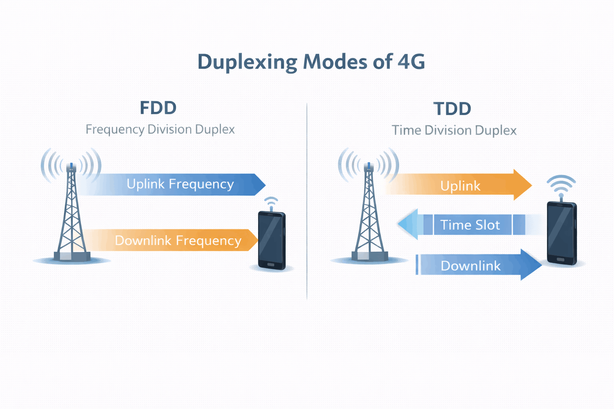
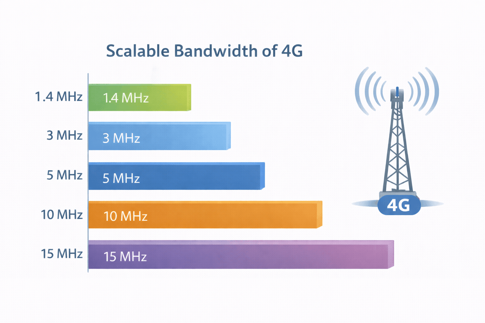
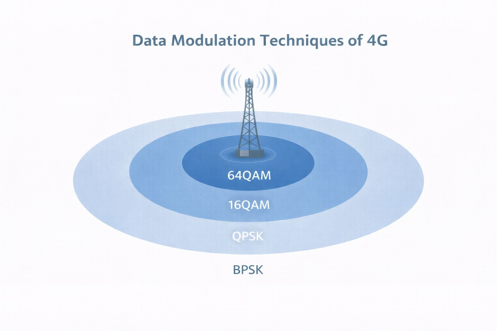
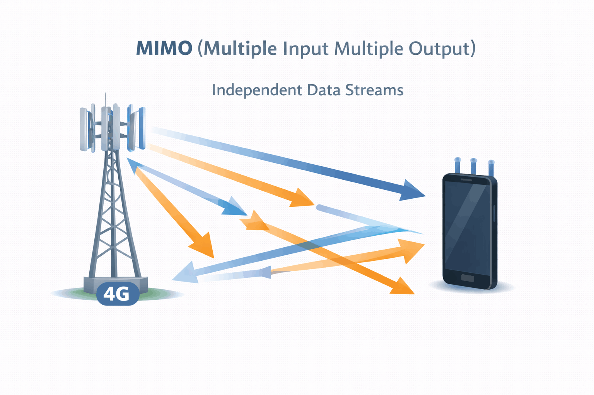
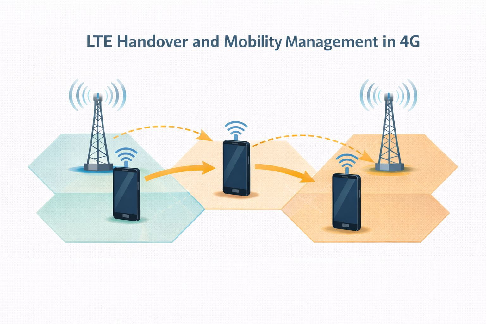
LTE is optimised to deliver packet data services.
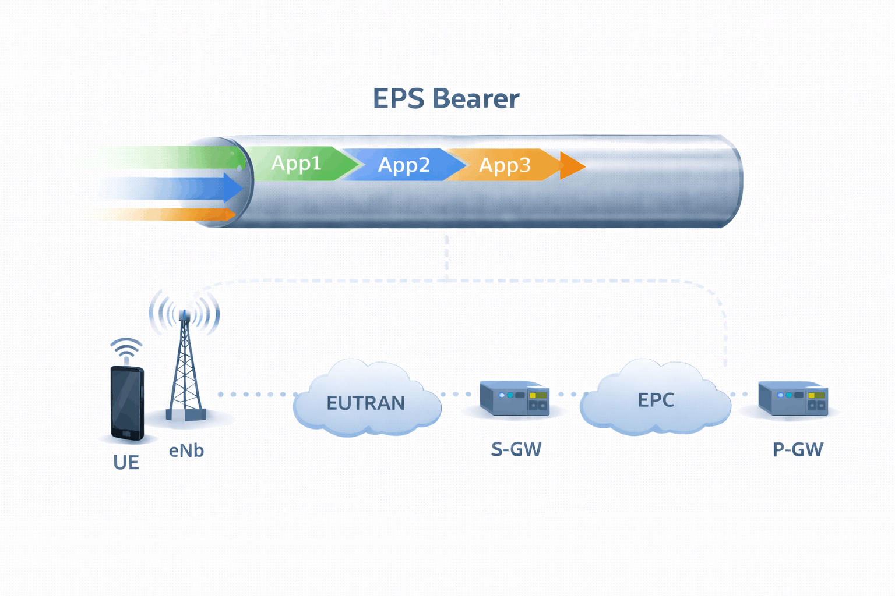
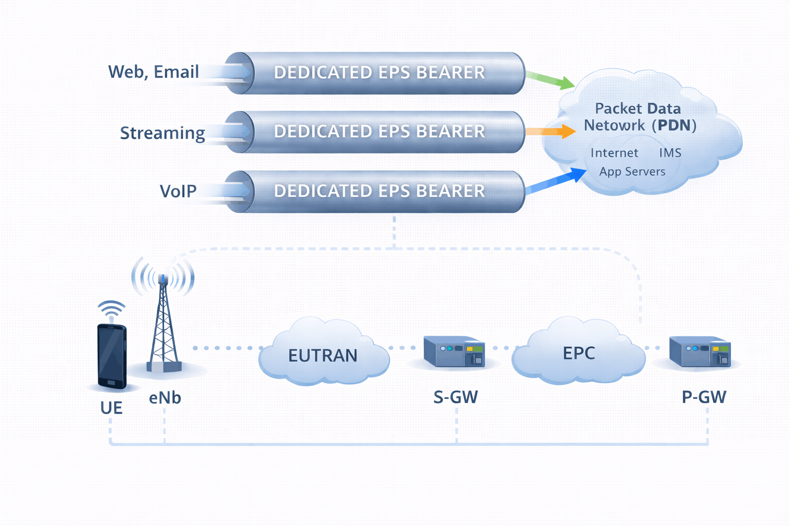
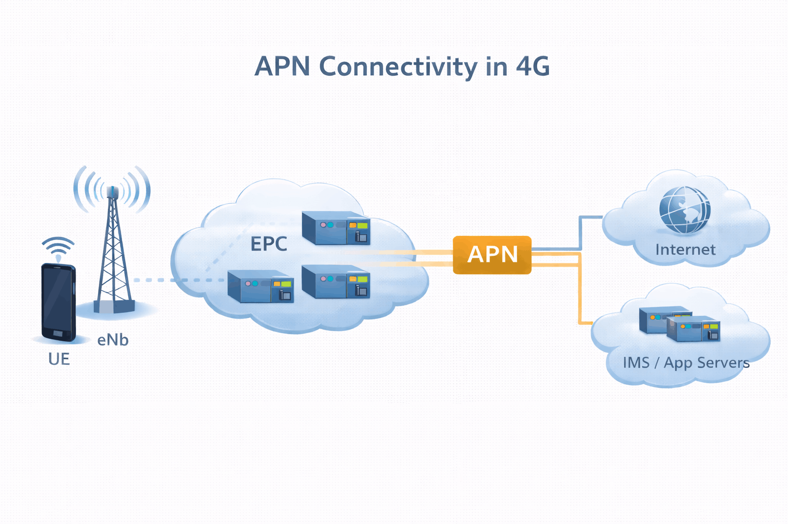
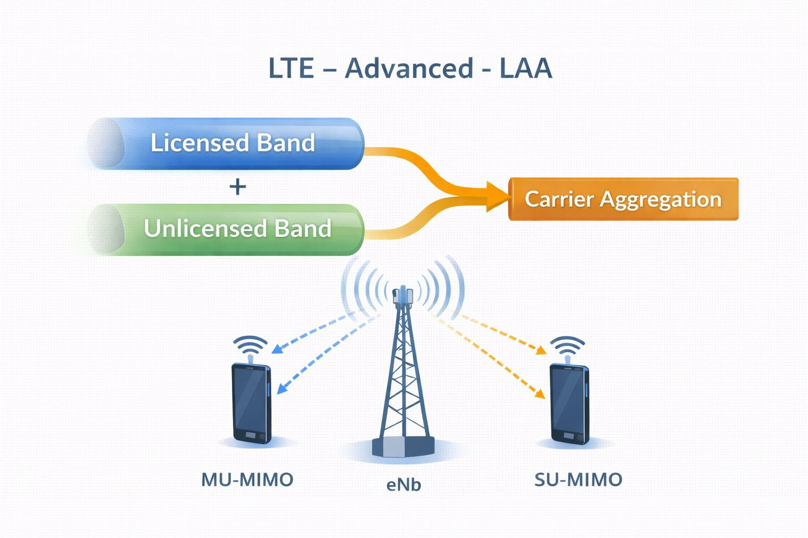
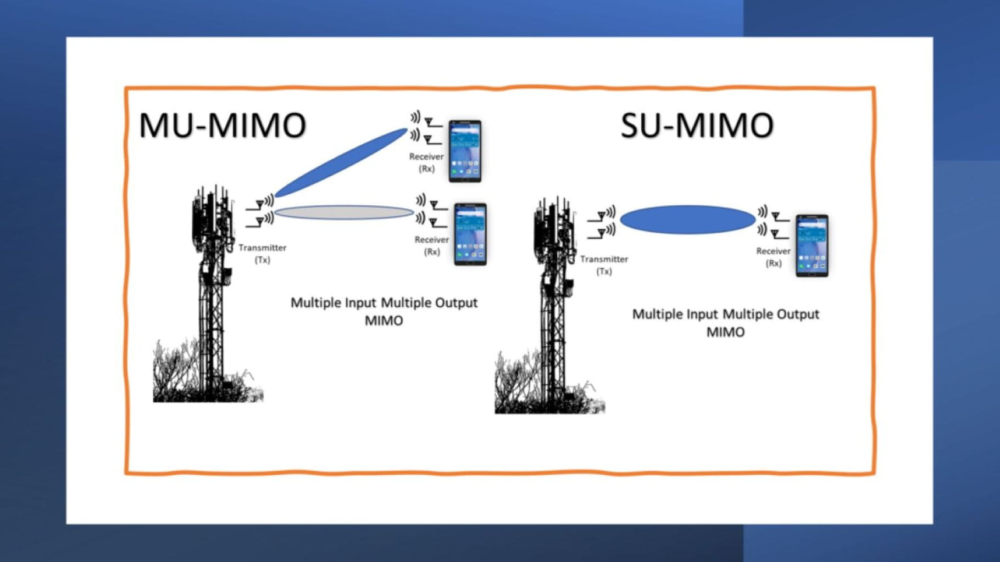
← LTE Advanced (Rel. 10–12) | LTE Advanced Pro (Rel. 13–14) →